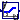

| Name | Description |
|---|---|
| HotWaterTemperatureReset | Block to compute the supply and return set point of heating systems |
| OccupancySchedule | Occupancy schedule with look-ahead |
|  Table | Model for a set point that is interpolated based on a user-specified table |
| Collection of models that illustrate model use and test models |
The parameter dTOutHeaBal can be used to shift the heating curve
to take into account that heat gains from solar, equipment and people
make up for some of the transmission losses.
For example, in energy efficient houses, the heating may not be switched on if
the outside air temperature is greater than
12°C, even if a room temperature of 20°C is required.
In such a situation, set dTOutHeaBal=20-12=8 Kelvin to
shift the heating curve.
| Type | Name | Default | Description |
|---|---|---|---|
| Real | m | 1.3 | Exponent for heat transfer |
| Boolean | use_TRoo_in | false | Get the room temperature set point from the input connector |
| Temperature | TRoo | 293.15 | Fixed value of room temperature set point [K] |
| TemperatureDifference | dTOutHeaBal | 8 | Offset for heating curve [K] |
| Nominal conditions | |||
| Temperature | TSup_nominal | Supply temperature [K] | |
| Temperature | TRet_nominal | Return temperature [K] | |
| Temperature | TRoo_nominal | 293.15 | Room temperature [K] |
| Temperature | TOut_nominal | Outside temperature [K] | |
| Type | Name | Description |
|---|---|---|
| input RealInput | TRoo_in | Room air temperature set point [K] |
| input RealInput | TOut | Outside temperature [K] |
| output RealOutput | TSup | Setpoint for supply temperature [K] |
| output RealOutput | TRet | Setpoint for return temperature [K] |
block HotWaterTemperatureReset
"Block to compute the supply and return set point of heating systems"
extends Modelica.Blocks.Interfaces.BlockIcon;
parameter Real m = 1.3 "Exponent for heat transfer";
parameter Modelica.SIunits.Temperature TSup_nominal "Supply temperature";
parameter Modelica.SIunits.Temperature TRet_nominal "Return temperature";
parameter Modelica.SIunits.Temperature TRoo_nominal = 293.15
"Room temperature";
parameter Modelica.SIunits.Temperature TOut_nominal "Outside temperature";
parameter Boolean use_TRoo_in = false
"Get the room temperature set point from the input connector";
parameter Modelica.SIunits.Temperature TRoo = 293.15
"Fixed value of room temperature set point";
parameter Modelica.SIunits.TemperatureDifference dTOutHeaBal(displayUnit="K") = 8
"Offset for heating curve";
Modelica.Blocks.Interfaces.RealInput TRoo_in(final quantity="Temperature",
final unit = "K", displayUnit = "degC", min=0) if
use_TRoo_in "Room air temperature set point";
Modelica.Blocks.Interfaces.RealInput TOut(final quantity="Temperature",
final unit = "K", displayUnit = "degC", min=0)
"Outside temperature";
Modelica.Blocks.Interfaces.RealOutput TSup(final quantity="Temperature",
final unit = "K", displayUnit = "degC", min=0)
"Setpoint for supply temperature";
Modelica.Blocks.Interfaces.RealOutput TRet(final quantity="Temperature",
final unit = "K", displayUnit = "degC", min=0)
"Setpoint for return temperature";
protected
Modelica.Blocks.Interfaces.RealInput TRoo_in_internal(final quantity="Temperature",
final unit = "K", displayUnit = "degC", min=0)
"Needed to connect to conditional connector";
Real qRel "Relative heating load = Q_flow/Q_flow_nominal";
Modelica.SIunits.Temperature TOutOffSet
"Effective outside temperature for heat transfer (takes into account room heat gains)";
parameter Modelica.SIunits.Temperature TOutOffSet_nominal = TOut_nominal + dTOutHeaBal
"Effective outside temperature for heat transfer at nominal conditions (takes into account room heat gains)";
equation
connect(TRoo_in, TRoo_in_internal);
if not use_TRoo_in then
TRoo_in_internal = TRoo;
end if;
TOutOffSet = TOut + dTOutHeaBal;
// Relative heating load, compared to nominal conditions
qRel = max(0, (TRoo_in_internal-TOutOffSet)/(TRoo_nominal-TOutOffSet_nominal));
TSup = TRoo_in_internal
+ ((TSup_nominal+TRet_nominal)/2-TRoo_nominal) * qRel^(1/m)
+ (TSup_nominal-TRet_nominal)/2 * qRel;
TRet = TSup - qRel * (TSup_nominal-TRet_nominal);
end HotWaterTemperatureReset;
 Buildings.Controls.SetPoints.OccupancySchedule
Buildings.Controls.SetPoints.OccupancyScheduleThis model outputs whether the building is currently occupied, and how long it will take until the next time when the building will be occupied or non-occupied. The latter may be used, for example, to start a ventilation system half an hour before occupancy starts in order to ventilate the room.
The occupancy is defined by a time schedule of the form
occupancy = 3600*{7, 12, 14, 19}
This indicates that the occupancy is from 7:00 until 12:00
and from 14:00 to 19:00. This will be repeated periodically.
The parameter periodicity defines the periodicity.
The period always starts at t=0 seconds.
Extends from Modelica.Blocks.Interfaces.BlockIcon (Basic graphical layout of input/output block).
| Type | Name | Default | Description |
|---|---|---|---|
| Real | occupancy[:] | 3600*{7,19} | Occupancy table, each entry switching occupancy on or off |
| Boolean | firstEntryOccupied | true | Set to true if first entry in occupancy denotes a changed from unoccupied to occupied |
| Time | period | 86400 | End time of periodicity [s] |
| Type | Name | Description |
|---|---|---|
| output RealOutput | tNexNonOcc | Time until next non-occupancy |
| output RealOutput | tNexOcc | Time until next occupancy |
| output BooleanOutput | occupied | Outputs true if occupied at current time |
block OccupancySchedule "Occupancy schedule with look-ahead"
extends Modelica.Blocks.Interfaces.BlockIcon;
parameter Real occupancy[:]=3600*{7, 19}
"Occupancy table, each entry switching occupancy on or off";
parameter Boolean firstEntryOccupied = true
"Set to true if first entry in occupancy denotes a changed from unoccupied to occupied";
parameter Modelica.SIunits.Time period = 86400 "End time of periodicity";
Modelica.Blocks.Interfaces.RealOutput tNexNonOcc
"Time until next non-occupancy";
Modelica.Blocks.Interfaces.RealOutput tNexOcc "Time until next occupancy";
Modelica.Blocks.Interfaces.BooleanOutput occupied
"Outputs true if occupied at current time";
protected
final parameter Integer nRow = size(occupancy,1)
"Number of rows in the schedule";
output Modelica.SIunits.Time offSet=integer(time/period)*period
"Time off-set, in multiples of period, that is used to switch the time when doing the table lookup";
output Integer nexStaInd "Next index when occupancy starts";
output Integer nexStoInd "Next index when occupancy stops";
output Integer iPerSta
"Counter for the period in which the next occupancy starts";
output Integer iPerSto
"Counter for the period in which the next occupancy stops";
output Modelica.SIunits.Time tOcc "Time when next occupancy starts";
output Modelica.SIunits.Time tNonOcc "Time when next non-occupancy starts";
encapsulated function switchInteger
input Integer x1;
input Integer x2;
output Integer y1;
output Integer y2;
algorithm
y1:=x2;
y2:=x1;
end switchInteger ;
encapsulated function switchReal
input Real x1;
input Real x2;
output Real y1;
output Real y2;
algorithm
y1:=x2;
y2:=x1;
end switchReal ;
initial algorithm
// Check parameters for correctness
assert(mod(nRow, 2) < 0.1,
"The parameter \"occupancy\" must have an even number of elements.\n");
assert(0 < occupancy[1],
"The first element of \"occupancy\" must be bigger than zero."
+ "\n Received occupancy[1] = " + String(occupancy[1]));
assert(period > occupancy[nRow],
"The parameter \"period\" must be greater than the last element of \"occupancy\"."
+ "\n Received period = " + String(period)
+ "\n occupancy[" + String(nRow) +
"] = " + String(occupancy[nRow]));
for i in 1:nRow-1 loop
assert(occupancy[i] < occupancy[i+1],
"The elements of the parameter \"occupancy\" must be strictly increasing.");
end for;
// Initialize variables
iPerSta := integer(time/period);
iPerSto := iPerSta;
// First, assume that the first entry is occupied
nexStaInd := 1;
nexStoInd := 2;
// nRow is an even number
for i in 1:2:nRow-1 loop
if time >= occupancy[i] + iPerSta*period then
nexStaInd := i+2;
end if;
end for;
for i in 2:2:nRow loop
if time >= occupancy[i] + iPerSto*period then
nexStoInd := i+2;
end if;
end for;
if nexStaInd > nRow then
nexStaInd := 1;
iPerSta :=iPerSta + 1;
end if;
if nexStoInd > nRow then
nexStoInd := 2;
iPerSto :=iPerSto + 1;
end if;
tOcc := occupancy[nexStaInd]+iPerSta*period;
tNonOcc := occupancy[nexStoInd]+iPerSto*period;
occupied := tNonOcc < tOcc;
// Now, correct if the first entry is vaccant instead of occupied
if not firstEntryOccupied then
(nexStaInd, nexStoInd) := switchInteger(nexStaInd, nexStoInd);
(iPerSta, iPerSto) := switchInteger(iPerSta, iPerSto);
(tOcc, tNonOcc) := switchReal(tOcc, tNonOcc);
occupied := not occupied;
end if;
algorithm
when time >= pre(tOcc) then
nexStaInd :=nexStaInd + 2;
occupied := not occupied;
// Wrap index around
if nexStaInd > nRow then
nexStaInd := if firstEntryOccupied then 1 else 2;
iPerSta :=iPerSta + 1;
end if;
tOcc := occupancy[nexStaInd] + iPerSta*period;
end when;
// Changed the index that computes the time until the next non-occupancy
when time >= pre(tNonOcc) then
nexStoInd :=nexStoInd + 2;
occupied := not occupied;
// Wrap index around
if nexStoInd > nRow then
nexStoInd := if firstEntryOccupied then 2 else 1;
iPerSto :=iPerSto + 1;
end if;
tNonOcc := occupancy[nexStoInd] + iPerSto*period;
end when;
tNexOcc := tOcc-time;
tNexNonOcc := tNonOcc-time;
assert(tNexOcc > -1e-3 and tNexOcc < period+1E-3, "tNexOcc must be non-zero and smaller than period.
Received tNexOcc = " + String(tNexOcc));
assert(tNexNonOcc > -1e-3 and tNexOcc < period+1E-3, "tNexNonOcc must be non-zero and smaller than period.
Received tNexNonOcc = " + String(tNexNonOcc));
end OccupancySchedule;
Buildings.Controls.SetPoints.Table tabLinExt(constantExtrapolation=false,
table=[20, 0.0;
22, 0.5;
25, 0.5;
26, 1.0]);
Buildings.Controls.SetPoints.Table tabConExt(constantExtrapolation=true,
table=[20, 0.0;
22, 0.5;
25, 0.5;
26, 1.0]);
will cause the following output:

For the default setting constantExtrapolation=true, the
block outputs
y=y1+offset for u ≤ u1, and
y=yMax+offset for u ≥ uMax.
Otherwise, the table is linearly extrapolated with a constant derivative.
Note that the first column must be strictly increasing.
Extends from Modelica.Blocks.Interfaces.SISO (Single Input Single Output continuous control block).
| Type | Name | Default | Description |
|---|---|---|---|
| Real | table[:, 2] | fill(0.0, 1, 2) | Table matrix ( e.g., table=[u1, y1; u2, y2; u3, y3]) |
| Real | offset | 0 | Offset of output signal |
| Boolean | constantExtrapolation | true | If true, then y=y1 for u<u1, and y=yMax for u>uMax |
| Type | Name | Description |
|---|---|---|
| input RealInput | u | Connector of Real input signal |
| output RealOutput | y | Connector of Real output signal |
model Table
"Model for a set point that is interpolated based on a user-specified table"
extends Modelica.Blocks.Interfaces.SISO;
parameter Real table[:,2]=fill(0.0, 1, 2)
"Table matrix ( e.g., table=[u1, y1; u2, y2; u3, y3])";
parameter Real offset=0 "Offset of output signal";
parameter Boolean constantExtrapolation = true
"If true, then y=y1 for u<u1, and y=yMax for u>uMax";
protected
final parameter Integer nCol = if constantExtrapolation then
size(table,1)+2 else
size(table,1) "Number of columns";
final parameter Real[nCol,2] offsetVector = [zeros(nCol), offset*ones(nCol)]
"Vector to take offset of output signal into account";
Modelica.Blocks.Tables.CombiTable1D tab(
tableOnFile=false,
final table= (if constantExtrapolation then
cat(1, [table[1,1]-1, table[1,2]],
table,
[table[end,1]+1, table[end,2]]) else
table)
+offsetVector) "Table used for interpolation";
equation
connect(u, tab.u[1]);
connect(tab.y[1], y);
end Table;